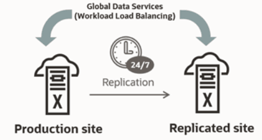

11 Oracle Global Data Services Best Practices
Oracle Database Global Data Services (GDS) is a holistic automated workload management feature of Oracle Database.
GDS provides workload routing, load balancing, inter-database service failover, replication lag-based routing, role-based global services, and centralized workload management for a set of replicated databases that are globally distributed or located within the same data center.
You can use GDS to achieve these benefits without the need to integrate with multiple-point solutions or homegrown products. GDS provides optimized hardware and software utilization, better performance, scalability, and availability for application workloads running on replicated databases.
Introduction to Global Data Services
Numerous organizations have multiple copies of their production or standby databases either locally or in different geographical locations. This redundancy fulfills various business needs, such as ensuring uninterrupted availability, preparing for disaster recovery, localizing content and caching, scaling operations, optimizing performance for local users, and complying with local regulations. Oracle Active Data Guard and Oracle GoldenGate, which synchronize these copies, are Oracle's strategic disaster recovery and replication technologies that provide the lowest Recovery Time Objective (RTO) and Recovery Point Objectives (RPO).
Achieving high performance and high availability by distributing workload across multiple database replicas presents challenges that extend beyond the capabilities of the replication technology. The workload must be load-balanced to use resources effectively and achieve the best performance. Outages must be handled intelligently so that applications remain available and deliver the best possible quality of service should a replica go offline. In an ideal world, load balancing and high availability using a pool of replicated databases occurs seamlessly and optimally using real-time information available from the Oracle Database. This ideal is achievable using Oracle Global Data Services (GDS).
GDS extends the concept of database services, a mechanism used for workload management in Oracle Real Application Clusters (RAC), to a globally replicated configuration that includes any combination of Oracle RAC, single instance database, Oracle Active Data Guard, and Oracle GoldenGate. GDS allows services to be deployed anywhere within this globally replicated configuration, supporting load balancing, high availability, regional affinity, and so on. GDS is built on time-tested technological building blocks such as services (Dynamic Workload Management), Oracle Active Data Guard and GoldenGate replication, and Oracle Net Listener.
Even though the feature is called Global Data Services, the databases that constitute the GDS configuration can be globally distributed or located within the same data center. Clients can securely connect by specifying a service name without needing to know where the physical data center assets providing that service are located, enabling a highly flexible deployment for an enterprise data cloud. With GDS, replicated databases appear to the applications as a single data source.
A GDS configuration contains multiple global service managers per region. The global service managers are “global listeners,” which understand real-time load characteristics and the user-defined service placement policies on the replicated databases. These global service managers are instrumental in performing inter-database service failovers and load balancing of GDS. GDS is a shared infrastructure that can govern multiple sets of replicated databases. This documentation describes the configuration and operational practices for GDS. It is intended for enterprise architects, database architects, database administrators, technology managers, solution architects, application architects, and those who are influential in the overall database architecture design.
Global Data Services Concepts
Database services are logical abstractions for managing workloads in an Oracle database. Each service represents a workload with common attributes, service-level thresholds, and priorities. The grouping can be based on work characteristics, including the application function. For example, the Oracle E-Business Suite defines a service for each application module, such as general ledger, accounts receivable, and order entry. Services are built into Oracle Database, providing a single system image for workloads. Services enable administrators to configure a workload, administer it, enable and disable it, and measure the workload as a single entity. Clients connect using a database service name.
In Oracle RAC, a service can span one or more instances and facilitate workload balancing based on real-time transaction performance. This provides high availability, rolling changes by workload, and complete location transparency. For replicated environments, GDS introduces the concept of a "global service". Global services are provided across a set of databases containing replicated data that belongs to a particular administrative domain known as a GDS pool. Examples of a GDS pool are a SALES pool or an HR pool. A set of databases in a GDS configuration and the database clients are said to be in the same GDS region if they share the network proximity. Examples of GDS regions are the Asian region, European region, and so on.
All of the characteristics of traditional database services are supported by global services. Global services extends traditional database services with additional attributes such as global service placement, replication lag (Oracle Active Data Guard and Oracle GoldenGate from 19c onwards), and region affinity.
Global service placement: When a global service is created, GDS allows the preferred and available databases for that service to be specified. The available databases support a global service if the preferred database fails. In addition, GDS allows you to configure a service to run on all the replicas of a given GDS pool.
Replication lag: Clients can be routed to the Oracle Active Data Guard standbys that are not lagging by the tolerance limit established with the lag attribute of a global service.
Region affinity: A global service allows you to set preferences to which region (for example Asia or Europe) your given applications should connect.
Figure 11-1 Workload Balancing with Global Data Services
Key Capabilities of Global Data Services
Global Data Services (GDS) technology provides the following principal capabilities:
-
Region-based workload routing: With GDS, you can choose to configure client connections to be routed among a set of replicated databases in a local region. This capability allows you to maximize application performance (avoiding the network latency overhead of accessing databases in remote areas).
-
Connect-time load balancing: Global service managers use the load statistics from all databases in the GDS pool, inter-region network latency, and the configured connect-time load balancing goal to route the incoming connections to the best database in a GDS pool.
-
Runtime load balancing: GDS enables runtime load balancing across replicated databases by publishing a real-time load balancing advisory for connection pool-based clients (for example, OCI, JDBC, ODP.NET, WebLogic, and so on.). The connection pool-based clients subscribe to this load-balancing advisory and route database requests in real time across already-established connections.
With GDS's runtime connection load balancing feature, application client work requests are dynamically routed to the database that offers the best performance. In addition, GDS also supports the ability to dynamically re-distribute connections when the database performance changes.
-
Inter-database service failover: If a database global service crash occurs, GDS, considering the service placement attributes, automatically performs an inter-database service failover to another available database in the pool. GDS sends Fast Application Notification (FAN) events so that the client connection pools can reconnect to the new database where the global service has been started.
-
Replication lag-based workload routing: With Oracle Active Data Guard, standbys may lag behind the primary database. A global service allows you to choose the acceptable lag tolerance for a given application. GDS routes requests to a standby database whose lag is below the limit. If the lag exceeds the lag limit, the service is relocated to another available standby database that lags below the threshold. New requests are routed to a standby database that satisfies the lag limit. The global service is shut down if there is no available database. When the lag is resolved or comes within the limit, GDS automatically brings up the service.
With Oracle GoldenGate replication, when the lag exceeds the lag threshold defined for a service (lag defined by
SELECT MAX(INCOMING_LAG FROM GGADMIN.GG_LAG), that service is stopped on that database. The service defines the effect of that; it may or may not terminate all the sessions based on the configuration. The service is restarted if the lag comes back within the threshold. After the service has been stopped, the global service manager automatically performs failover processing. Any new connections to this service are directed elsewhere than the lagged database. So, if there are two databases in the pool, and the service ispreferred_allwithlag=10initially, the service runs on both databases, and the connections are load-balanced. If the second database goes past the lag threshold, the service is stopped there, and any new connections are directed only to the first database. If the lag comes back within the threshold, the service is restarted, load balancing continues, and new connections can use the second database. -
Role-based global services: When a database role transition is performed with Oracle Data Guard Broker, GDS can automatically relocate the global service to the new primary database and the new standby if the role assigned to the service matches the role of the database.
-
Centralized workload management for replicas: GDS allows more straightforward configuration and management of the replicated databases' resources located anywhere with a single unified framework.
Benefits of Global Data Services
Global Data Services (GDS) allows fault-tolerant database services to be deployed and centrally managed across a set of replicated databases. The GDS framework provides workload balancing across these databases. More specifically, GDS is an Oracle-integrated solution that renders the following benefits:
-
Higher availability and global scalability support seamless inter-database service failover among replicated databases in any data center, yielding higher application availability.
-
GDS provides application scalability on demand by allowing dynamic addition of databases. It enables replicated databases to be added to the GDS infrastructure dynamically and transparently to obtain additional resource capability to scale application workloads. GDS allows this with no change to the application configuration or client connectivity.
Better Performance and Elasticity
With integrated load balancing across multiple databases, GDS addresses inter-region resource fragmentation. Under-utilized resources in one region can be put to work on the workload of another region's over-utilized resources, achieving optimal resource utilization. GDS sends work requests to less powerful databases in a GDS pool containing replicated databases running on database servers of different processor generations and various resources (CPU, memory, I/O). When more powerful databases are overloaded, the goal should be to equalize the response time.
Improved Manageability
The GDSCTL command-line interface or the Oracle Enterprise Manager Cloud Control graphical user interface can administer a GDS configuration. With centralized administration of global resources, geographically dispersed replicated databases, whether regional or global, can be effectively utilized within the unified framework of GDS.
Centralized workload management of replicated databases, inter-database service failover, and runtime load balancing are unique features of GDS. GDS enables a truly elastic and agile enterprise and extends the benefits of a private data cloud.
Application Workload Suitability for Global Data Services
Global Data Services (GDS) is best for replication-aware application workloads; it is designed to work in replicated environments. Applications that are suitable for GDS adoption possess any of the following characteristics:
-
The application can separate its work into read-only, read-mostly, and read-write services to use Oracle Active Data Guard or Oracle GoldenGate replicas. GDS does not distinguish between read-only, read-write, and read-mostly transactions. The application connectivity has to be updated to separate read-only or read-mostly services from read-write services, and the GDS administrator can configure the global services on appropriate databases. For example, a reporting application can function directly with a read-only service at an Oracle Active Data Guard standby database.
-
Administrators should be aware of and avoid or resolve multi-master update conflicts to take advantage of Oracle GoldenGate replicas. For example, an internet directory application with built-in conflict resolution enables the read-write workload to be distributed across multiple databases, each open read-write and synchronized using Oracle GoldenGate multi-master replication.
-
Ideally, the application is tolerant of replication lag. For example, a web-based package tracking application that allows customers to track the status of their shipments using a read-only replica, where the replica does not lag the source transactional system by more than 10 seconds.
Global Data Services in Oracle Maximum Availability Architecture
The Oracle Maximum Availability Architecture (MAA) is Oracle’s best practices blueprint for the integrated suite of Oracle’s advanced High Availability (HA) technologies. Enterprises that leverage MAA in their IT infrastructure find they can quickly and efficiently deploy applications that meet their business requirements for high availability.
Without Oracle Global Data Services, administrators were required to deploy 3rd party load balancers or have opted for custom-written connection managers. The 3rd party solutions come with significant integration costs, and the DIY homegrown solutions require high initial cost and time to value as well as an overhead of maintenance and support effort.
Using Global Data Services, you can unify replicated database resources within a single framework, avoiding the need to produce homegrown or 3rd party integration for load balancing. You can minimize the vendor integration touch points in their high availability and disaster recovery stack.
Figure 11-2 Oracle Global Data Services in Maximum Availability Architecture

Description of "Figure 11-2 Oracle Global Data Services in Maximum Availability Architecture"
Global Data Services is a strategic MAA component available within the Oracle Database. GDS is well integrated with the Oracle ecosystem, providing workload routing, load balancing, and service failover across replicated databases located within and across data centers. Simply put, GDS is a database load balancer for replicated databases and provides high availability through the inter-database service failover capability.
Global Data Services lets administrators manage client workloads automatically and transparently across replicated databases that offer common services. A database service is a named representation of one or more database instances. Services let you group database workloads and route a particular work request to an appropriate instance. A global service is provided by multiple databases synchronized through data replication.
Global Data Services provides dynamic load balancing, failover, and centralized service management for replicated databases that offer common services. The set of databases can include Oracle RAC and non-cluster Oracle databases interrelated through Oracle Data Guard, databases consolidated under Oracle Multitenant, Oracle GoldenGate, or any other replication technology.
For detailed information about GDS, see the Global Data Services technical brief at http://oracle.com/goto/gds.
Partial or Full Site Outage with Global Data Services
Complete-site failure results in both the application and database tiers being unavailable. To maintain availability, users must be redirected to a secondary site that hosts a redundant application tier and a synchronized copy of the production database. MAA's best practice is to maintain a running application tier at the standby site to avoid startup time and use Oracle Data Guard to manage the synchronized copy of the production database. Upon site failure, a WAN traffic manager performs a DNS failover (manually or automatically) to redirect all users to the application tier at the standby site. In contrast, a failover transitions the standby database to the primary production role.
A partial-site failure is when the application or database stack encounters an outage. Connecting clients to the disaster recovery site application stack can mitigate application stack failure. However, when the primary database becomes unavailable, the application tier connected to the primary database remains intact. All that is required to maintain availability is to redirect the application tier to the new primary database after a Data Guard failover has been completed. In this use case, the standby database is located within a distance from the surviving application tier such that it can deliver acceptable performance using a remote connection after a database failover has occurred.
Global Data Services (GDS) enables service management and load balancing between replicated databases withina region. However, the application tier still functions when GDS global service managers can route connections to the best available replica based on load balancing policies and service availability. By contrast, an out-of-region failover requires users to be directed to a remote application tier local to the new production database (serviced by a different set of in-region global service managers. This document focuses on GDS configuration for failover within a region.
Global Data Services Configuration
High-Level Deployment Steps
The following are the basic steps you would take to implement Global Data Services.
Configuration Example
The following steps describe how to implement Global Data Services.
This example configuration of Global Data Services (GDS) uses an Administrator-managed Oracle RAC database. Administrator-managed deployment means that you configure database services to run on specific instances belonging to a particular database using a preferred and available designation.
Policy-managed deployment is based on server pools, where database services run within a server pool as singletons or uniformly across all of the servers in the server pool. Databases are deployed in one or more server pools, and the size of the server pools determines the number of database instances in the deployment. For detailed information about GDS, see Global Data Services Concepts and Administration Guide
Configuration Best Practices
Oracle MAA recommends the following best practices for implementing Global Data Services:
-
Each client communicates using an Oracle-integrated connection pool such as UCP, OCI, or ODP.NET. The connection pools will be notified about any service failovers and load balancing advisory notifications using Fast Application Notification Events.
-
Run three global service managers in each region. Create three global service managers in each region so that if one global service manager goes down, you have two remaining global service managers to provide redundancy. Each global service manager should reside on separate hardware. Global service managers enable connection routing among replicated databases. A global service manager is a stateless, lightweight, and intelligent listener that can repopulate its metadata from the GDS catalog.
-
Protect the GDS catalog database with Oracle Data Guard.The GDS catalog is a small (< 100 GBs) repository that hosts the metadata of the GDS configuration, regions, global service managers, global services, databases, and so on. MAA recommends that you set up a local Data Guard standby database configured with Maximum Availability database protection mode, Data Guard Fast-Start failover, and a remote physical standby database. All GDS catalog standby databases should use Oracle Active Data Guard for the best data protection and reside on separate hardware and storage.
Using FAN ONS with Global Data Services
Fast Application Notification (FAN) uses the Oracle Notification Service (ONS) for event propagation to all Oracle Database clients, including JDBC, Tuxedo, and listener clients.
ONS is installed as part of Oracle Global Data Services, Oracle Grid Infrastructure on a cluster, in an Oracle Data Guard installation, and when Oracle WebLogic is installed.
ONS propagates FAN events to all other ONS daemons it is registered with. No steps are needed to configure or enable FAN on the database server side, with one exception: OCI FAN and ODP FAN require that notification be set to TRUE for the service by GDSCTL. With FAN auto-configuration at the client, ONS jar files must be on the CLASSPATH or in the ORACLE_HOME, depending on your client.
General Best Practices for Configuring FCF Clients
Follow these best practices before progressing to driver-specific instructions.
-
Use a dynamic database service. Using FAN requires that the application connects to the database using a dynamic global database service. This is a service created using GDSCTL.
-
Do not connect using the database service or PDB service. These services are for administration only and are not supported for FAN. The TNSnames entry or URL must use the service name syntax and follow best practices by specifying a dynamic database service name. Refer to the examples later in this document.
-
Use the Oracle Notification Service when you use FAN with JDBC thin, Oracle Database OCI, or ODP.Net clients. FAN is received over ONS. Accordingly, in the Oracle Database, ONS FAN auto-configuration is introduced so that FCF clients can discover the server-side ONS networks and self-configure. FAN is automatically enabled when ONS libraries or jars are present.
-
Enabling FAN on most FCF clients is still necessary in the Oracle Database. FAN auto-configuration removes the need to list the global service managers an FCF client needs.
-
Listing server hosts is incompatible with location transparency and causes issues with updating clients when the server configuration changes. Clients already use a TNS address string or URL to locate the global service manager listeners.
-
FAN auto-configuration uses the TNS addresses to locate the global service manager listeners and then asks each server database for the ONS server-side addresses. When there is more than one global service manager FAN auto-configuration contacts each and obtains an ONS configuration for each one.
-
The ONS network is discovered from the URL when using the Oracle Database. An ONS node group is automatically obtained for each address list when
LOAD_BALANCEis off across the address lists. -
By default, the FCF client maintains three hosts for redundancy in each node group in the ONS configuration.
-
Each node group corresponds to each GDS data center. For example, if there is a primary database and several Oracle Data Guard standbys, there are by default three ONS connections maintained at each node group. The node groups are discovered when using FAN auto-configuration.
With
node_groupsdefined by FAN auto-configuration, andload_balance=false(the default), more ONS endpoints are not required. If you want to increase the number of endpoints, you can do this by increasing max connections. This applies to each node group. Increasing to 4 in this example maintains four ONS connections at each node. Increasing this value consumes more sockets.oracle.ons.maxconnections=4 ONS - If the client is to connect to multiple clusters and receive FAN events from them, for example in Oracle RAC with a Data Guard event, then multiple ONS node groups are needed. FAN auto-configuration creates these node groups using the URL or TNS name. If automatic configuration of ONS (Auto-ONS) is not used, specify the node groups in the Oracle Grid Infrastructure or oraaccess.xml configuration files.
Client Side Configuration
As a best practice, multiple global service managers should be highly available. Clients should be configured for multiple connection endpoints where these endpoints are global service managers rather than local, remote, or single client access name (SCAN) listeners. For OCI / ODP .Net clients use the following TNS name structure.
(DESCRIPTION=(CONNECT_TIMEOUT=90)(RETRY_COUNT=30)(RETRY_DELAY=3) (TRANSPORT_CONNECT_TIMEOUT=3)
(ADDRESS_LIST =
(LOAD_BALANCE=on)
(ADDRESS=(PROTOCOL=TCP)(HOST=GSM1)(PORT=1522))
(ADDRESS=(PROTOCOL=TCP)(HOST=GSM2)(PORT=1522))
(ADDRESS=(PROTOCOL=TCP)(HOST=GSM3)(PORT=1522)))
(ADDRESS_LIST=
(LOAD_BALANCE=on)
(ADDRESS=(PROTOCOL=TCP)(HOST=GSM2)(PORT=1522)))
(CONNECT_DATA=(SERVICE_NAME=sales)))Always use dynamic global database services created by GDSCTL to connect to the database. Do not use the database service or PDB service, which are for administration only not for application usage and they do not provide FAN and many other features because they are only available at mount.
Use the latest client driver aligned with the latest or older RDBMS for JDBC. Use one
DESCRIPTION in the TNS names entry or URL Using more causes long
delays connecting when RETRY_COUNT and RETRY_DELAY are
used. Set CONNECT_TIMEOUT=90 or higher to prevent logon storms for OCI
and ODP clients.
Application-Level Configuration
Configuring FAN for Java Clients Using Universal Connection Pool
The best way to take advantage of FCF with the Oracle Database JDBC thin driver is to use the Universal Connection Pool (UCP) or WebLogic Server Active GridLink.
Setting the pool property FastConnectionFailoverEnabled on the Universal
Connection Pool enables Fast Connection Failover (FCF). Active GridLink always has FCF
enabled by default. Third-party application servers, including IBM WebSphere and Apache
Tomcat, support UCP as a connection pool replacement.
For more information about embedding UCP with other web servers, see the following technical briefs.
-
Design and deploy WebSphere applications for planned or unplanned database downtimes and runtime load balancing with UCP (https://www.oracle.com/docs/tech/database/planned-unplanned-rlb-ucp-websphere.pdf)
-
Design and deploy Tomcat applications for planned or unplanned database downtimes and Runtime Load Balancing with UCP (https://www.oracle.com/docs/tech/database/planned-unplanned-rlb-ucp-tomcat.pdf)
Follow these configuration steps to enable Fast Connection Failover.
-
The connection URL must use the service name syntax and follow best practices by specifying a dynamic database service name and the JDBC URL structure (above and below).
All other URL formats are not highly available. The URL may use JDBC thin or JDBC OCI.
-
If wallet authentication has not been established, remote ONS configuration is needed.
Set the pool property
setONSConfigurationin a property file as shown in the following example. The property file specified must contain anons.nodesproperty and, optionally, properties fororacle.ons.walletfileandoracle.ons.walletpassword. An example of anons.propertiesfile is shown here.PoolDataSource pds = PoolDataSourceFactory.getPoolDataSource(); pds.setConnectionPoolName("FCFSamplePool"); pds.setFastConnectionFailoverEnabled(true); pds.setONSConfiguration("propertiesfile=/usr/ons/ons.properties"); pds.setConnectionFactoryClassName("oracle.jdbc.pool.OracleDataSource"); pds.setURL("jdbc:oracle:thin@((CONNECT_TIMEOUT=4)(RETRY_COUNT=30)(RETRY_DELAY=3) "+ " (ADDRESS_LIST = "+ " (LOAD_BALANCE=on) "+ " ( ADDRESS = (PROTOCOL = TCP)(HOST=GSM1)(PORT=1522))) "+ " (ADDRESS_LIST = "+ " (LOAD_BALANCE=on) "+ "( ADDRESS = (PROTOCOL = TCP)(HOST=GSM2)(PORT=1522)))"+ "(CONNECT_DATA=(SERVICE_NAME=service_name)))"); -
Ensure the pool property
setFastConnectionFailoverEnabled=trueis set. -
The
CLASSPATHmust contain ons.jar, ucp.jar, and the JDBC driver jar file.For example, ojdbc8.jar.
-
If you are using JDBC thin with Oracle Database, Application Continuity can be configured to failover the connections after FAN is received.
-
If the database needs different ONS endpoints than those autoconfigured, the ONS endpoints can be enabled.
In a situation where multiple clusters exist with auto-ons enabled, auto-ons would generate node lists with the following guidelines:
For EVERY active nodelist
oracle.ons.maxconnectionsis set to 3 by default, so there is no need to set this explicitly. This example will result in the ONS client trying to maintain six total connections.
Configuring FAN for OCI Clients
OCI clients use ONS for FAN transport.
OCI clients embed FAN at the driver level so that all clients can use it regardless of the pooling solution. Ideally, both the server and the client would use release 19c or later.
Configuration for SQL*Plus and PHP
-
Set notification for the service.
-
For PHP clients only, add
oci8.events=Ontophp.ini.Important: If xml is present with events=-false or events are not specified, this disables the usage of FAN. To maintain FAN with SQL*Plus and PHP when
oraccess.xmlis in use, setevents=-true. -
On the client side, using a client and Oracle Database, enable FAN in xml.
Configuration for OCI Clients
-
Tell OCI where to find ONS Listeners Starting.
The client installation comes with ONS linked into the client library. Using auto-config, the ONS endpoints are discovered from the TNS address. This automatic method is the recommended approach. Like ODP.Net, manual ONS configuration is also supported using
oraaccess.xml. -
Enable FAN high availability events for the OCI connections.
To enable FAN you edit the OCI file xml to specify the global parameter events. This file is located in $ORACLE_HOME/network/admin. See Step 3: Ensure That FAN Is Used and ONS port 6200 is Open for more information.
-
Tell OCI where to find ONS Listeners.
The client installation comes with ONS linked into the client library. Using auto-config, the ONS endpoints are discovered from the TNS address. This automatic method is the recommended approach. Like ODP.Net, manual ONS configuration is also supported using
oraaccess.xml. -
Enable FAN on the server for all OCI clients.
It is still necessary to enable FAN on the database server for all OCI clients (including SQL*Plus).
Controlling Logon Storms
Small connection pools are strongly recommended, but controlling logon storms can be done with tuning when you have many connections.
Oracle MAA recommends the following tuning on servers that host Global Service Managers.
-
Increase the Listen backlog at the OS level.
To have the new value take effect without rebooting the server, perform the following as root.
echo 8000 > /proc/sys/net/core/somaxconn -
To persist the value across reboots, add this setting to /etc/sysctl.conf.
net.core.somaxconn=6000 -
Increase
queuesizefor the global service manager listener.Update ora in Oracle home that the listeners are running from to increase the
queuesizeparameter:TCP.QUEUESIZE=6000
Graceful Application Switchover
Database services are used to manage workloads during the planned outage properly. Services must be properly created, and the application must obtain connections from a service.
These recommendations assume using a FAN-aware connection pool, such as Oracle Universal Connection Pool (UCP) to gracefully drain connections without application interruption from a service that is stopped. Your applications can use other connection types that don't support FAN-aware connection pools or have long-running transactions. Ideally, these applications will be disconnected before the maintenance window.
The recommendations below describe how to disconnect some sessions when their transaction ends in a timely manner or, ultimately, when the instance is shut down for maintenance.
The recommended and validated approach to understanding and optimizing your application's connection configuration is provided in the following sections; certain applications may have specific guidelines to follow.
Understanding Your Application's Use of Connections
Understanding how your application obtains and releases its connections is critical to determining whether it can gracefully switch to other instances in the cluster.
Find the following information about your application:
-
What was the workload during the planned outage (OLTP/short or batch/long transactions)?
-
Short transactions using a connection pool such as UCP or ODP.NET can be quiesced rapidly.
-
Long transactions need additional time to quiesce or must have batch jobs stopped or queued at an appropriate time in advance.
-
-
What type of connection was obtained: Java, OCI, ODP with C#, or ODP with OCI)?
-
UCP, ICC, ODP.NET, and OCI session pools use Fast Application Notification (FAN) to drain the pool quickly; other connections require waiting until the connection is closed (or termination if the application allows)
-
-
What is the amount of time to wait for the connection pool to quiesce before stopping the service?
-
Useful to know the proper amount of time is given before disconnection is performed
-
-
Can the application handle disconnection after the transaction completes (applies to batch workloads)?
-
If the application can't handle being disconnected gracefully, it must be stopped before the planned maintenance, or Application Continuity might be an option to avoid interruption.
-
Services and Application Configuration Best Practices
You must have properly configured services and application attributes to perform a graceful switchover successfully. See My Oracle Support Doc ID 1617163.1 for a matrix of validated drivers and applications clients.
Note:
You must test your configuration to ensure that it is set up and performs switchover properly before relying on it for a production system.Using Oracle Active Data Guard with Global Data Services
Configure sessions to move in a rolling manner for Oracle Active Data Guard reader farm.
Prerequisites
You must have the following in place for this procedure to work correctly.
-
Oracle Active Data Guard configuration using Oracle Database (release 19c or later recommended).
-
Global Data Services (GDS) configuration using global service manager (release 19c or later recommended).
-
A GDS service has been created to run on all Active Data Guard databases in the configuration.
For example:
GDSCTL>add service -service sales_sb -preferred_all -gdspool sales –role physical_standby -notification TRUE GDSCTL>modify service -gdspool sales -service sales_sb -database mts -add_instances -preferred mts1,mts2 GDSCTL>modify service -gdspool sales -service sales_sb -database stm -add_instances -preferred stm1,stm2 GDSCTL>start service -service sales_sb -gdspool sales
Using Oracle GoldenGate with Global Data Services
The following Oracle GoldenGate role transition example topology consists of two databases: GG replica1 and GG replica2. Oracle GoldenGate is set up with uni-directional replication, with Extract running initially on GG replica1 and Replicat running initially on GG replica2. The generic steps still apply for bi-directional GoldenGate replicas or downstream mining GoldenGate replicas.
Prerequisites
You must have the following in place for this procedure to work correctly.
-
Oracle GoldenGate configuration that uses Oracle Database (19c or higher recommended)
-
GoldenGate processes should not connect to the source or target database using the GDS service name, but a dedicated TNS alias. Using the GDS service will cause the database connections to terminate prematurely, causing possible data loss.
- A heartbeat table has been implemented in the GoldenGate source and target databases to track replication latency and ensure the Replicat applied SCN synchronization. The GoldenGate automatic heartbeat table feature should be enabled. Refer to the Oracle GoldenGate Administration Guide for details on the automatic heartbeat table: https://docs.oracle.com/en/middleware/goldengate/core/19.1/gclir/add-heartbeattable.html.
-
Global Data Services (GDS) configuration using global service manager (19c or higher recommended)
-
GDS service has been created so that it can be run on all databases in the GoldenGate configuration.
For example:
GDSCTL>add service -service sales_sb -preferred_all -gdspool sales GDSCTL>modify service -gdspool sales -service sales_sb -database mts -add_instances -preferred mts1,mts2 GDSCTL>modify service -gdspool sales -service sales_sb -database stm -add_instances -preferred stm1,stm2 GDSCTL>start service -service sales_sb -gdspool sales
Note:
If you are using the lag tolerance option, specify the lag limit for the global service in seconds. Options foradd service or modify
service are -lag {lag_value | ANY}.
The above steps allow for a graceful switchover. However, if this is a failover event where the source database is unavailable, you can estimate the data loss using the steps below.
-
When using the automatic heartbeat table, use the following query to determine the replication latency.
SQL> col Lag(secs) format 999.9 SQL> col "Seconds since heartbeat" format 999.9 SQL> col "GG Path" format a32 SQL> col TARGET format a12 SQL> col SOURCE format a12 SQL> set lines 140 SQL> select remote_database "SOURCE", local_database "TARGET", incoming_path "GG Path", incoming_lag "Lag(secs)", incoming_heartbeat_age "Seconds since heartbeat" from gg_lag; SOURCE TARGET GG Path Lag(secs) Seconds since heartbeat ------------ ------------ -------------------------------- --------- ----------------------- MTS GDST EXT_1A ==> DPUMP_1A ==> REP_1A 7.3 9.0The above example shows a possible 7.3 seconds of data loss between the source and target databases.
-
Start the GDS service on the target database and allow sessions to connect.
Note that if the application workload can accept a certain level of data lag, it is possible to perform this step much earlier than step two listed above.
GDSCTL>start service -service sales_sb -database stm -gdspool sales -
Log on to the target database and check
V$SESSIONto see sessions connected to the service.SQL> SELECT service_name, count(1) FROM v$session GROUP BY service_name ORDER BY 2;
Global Data Services Failover Across Regions Flow
- The administrator has failed over or switched the production database to the secondary site. This is automatic if you are using Data Guard fast-start failover.
- The administrator starts the middle-tier application servers on the secondary site if they are not already running.
- The wide-area traffic manager selection of the secondary site can be automatic in the case of an entire site failure. The wide-area traffic manager at the secondary site returns the virtual IP address of a load balancer at the secondary site, and clients are directed automatically on the subsequent reconnect. In this scenario, the site failover is accomplished by an automatic domain name system (DNS) failover.
- Alternatively, a DNS administrator can manually change the wide-area traffic manager
selection to the secondary site for the entire site or specific applications.
The following is an example of a manual DNS failover:
- Change the DNS to point to the secondary site load balancer: The primary (primary) DNS server is updated with the new zone information, and the change is announced with DNS NOTIFY.
- The secondary DNS servers are notified of the zone update with a DNS NOTIFY announcement, and the secondary DNS servers pull the new zone information.
- Clear affected records from caching DNS servers.
A caching DNS server is used primarily for performance and fast response. The caching server obtains information from an authoritative DNS server in response to a host query and then saves (caches) the data locally. On a second or subsequent request for the same data, the caching DNS server responds with its locally stored data (the cache) until the response's time-to-live (TTL) value expires. At this time, the server refreshes the data from the zone master. If the DNS record is changed on the primary DNS server, then the caching DNS server does not pick up the change for cached records until TTL expires. Flushing the cache forces the caching DNS server to go to an authoritative DNS server again for the updated DNS information.
- Flush the cache if the DNS server being used supports such a capability. The
following is the flush capability of standard DNS BIND versions:
- BIND 9.3.0: The command
rndc flushname nameflushes individual entries from the cache. - BIND 9.2.0 and 9.2.1: The cache can be flushed with the command
rndc flush. - BIND 8 and BIND 9 up to 9.1.3: Restarting the named server clears the cache.
- BIND 9.3.0: The command
- Refresh local DNS service caching.
Some operating systems might cache DNS information locally in the local name service cache. If so, this cache must also be cleared to recognize DNS updates quickly.
- The secondary site load balancer directs traffic to the secondary site middle-tier application server.
Global Data Services Limitations and Requirements
| A Single GDS Manages | GDS Databases |
|
|
| Requirement | Network Load Balancer | Oracle GDS |
|---|---|---|
| Locality-based routing | Yes | Yes |
| Connect-time database load balancing | Yes | Yes |
| Publish routing and failover intelligence to clients | No | Yes |
| Replication lag-based database workload routing | No | Yes |
| Inter-database global service failover | No | Yes |
| Automatic role-based global services | No | Yes |
| Centralized management of database services across replicas | No | Yes |
| Native integration for Oracle Active Data Guard | No | Yes |
| Cost effectiveness | Additional expenditure required | Included with Oracle Active Data Guard or Oracle GoldenGate license |